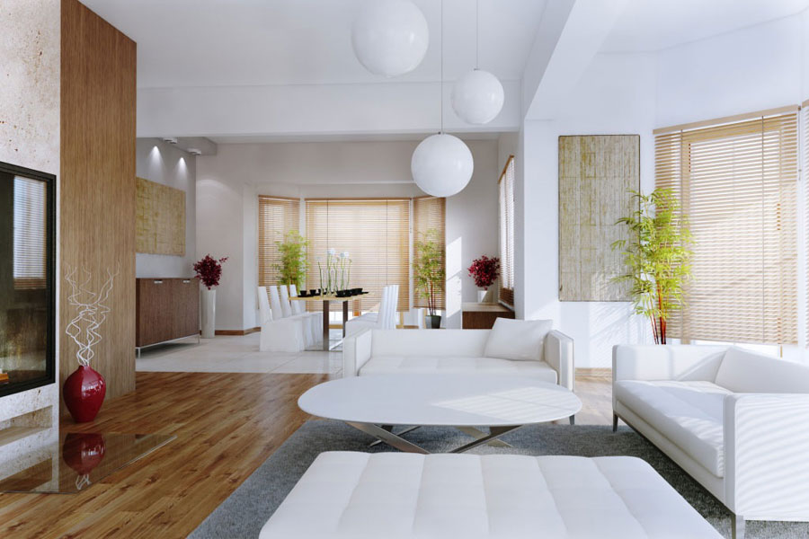

Welcome to Дизайн интерьера у вас в городе
Houzz - Дизайн интерьеров, идеи для перепланировки и ремонта
2020.11.20 17:07пропустить Войти Вы профессионал? History of Houzz ФОТО КУХНЯ И СТОЛОВАЯ Кухня Кухня-гостиная Столовая Маленькая кухня Белая кухня Современная кухня ГОСТИНАЯ И ПРИХОЖАЯ Гостиная Гостиная в современном стиле Коридор Прихожая Прихожая в современном стиле Прихожая в скандинавском стиле СПАЛЬНЯ И ДЕТСКАЯ Спальня Гардеробная Маленькая спальня Детская комната Комната для малыша Комната для подростка ВАННАЯ И БАНЯ Ванная комната Маленькая ванная Туалет Санузел Прачечная Баня ЧАСТНЫЙ ДОМ Дома снаружи Веранда Терраса Беседка Гараж Бассейн ДРУГИЕ ПРОСТРАНСТВА Тренажерный зал Участок Дворик Балкон и лоджия Лестница Кабинет ЕЩЕ ПОПУЛЯРНО Кухня в стиле лофт Кухня в скандинавском стиле Угловая кухня Маленькая угловая кухня Кухня с островом Спальня в стиле лофт Стиль лофт Скандинавский стиль Современные дома Смотреть все> ПОИСК ЭКСПЕРТА ДИЗАЙН И СТРОИТЕЛЬСТВО Дизайнеры интерьера Архитекторы Декораторы и стилисты Строительство домов РЕМОНТ И ОТДЕЛКА Ремонт квартир и домов Ремонт кухни Ремонт ванной Электромонтажные работы Окна Двери МЕБЕЛЬ И ТЕКСТИЛЬ Мебель и аксессуары Кухни на заказ Корпусная мебель Реставрация мебели Обивка мебели и текстиль Шторы и жалюзи ПРОЧИЕ ПРОФЕССИОНАЛЫ Художники и ремесленники Плотники и столяры Художественная ковка Фотографы ДОМ И УЧАСТОК Ландшафтный дизайн Беседки и веранды Камины и печи Лестницы и перила Заборы и ворота Кровля и водостоки Бассейны Солнечная энергия Умный дом Бани и сауны Смотреть всех экспертов Смотреть все услуги СТАТЬИ НОВОЕ НА HOUZZ Мир Россия В гостях Про стройку Про ремонт Про декор Про кухни Маленькие квартиры Сад и растения Популярные рубрики Читать все ИССЛЕДОВАНИЯ HOUZZ ФОРУМ ДИСКУССИИ HOUZZ Выбор дизайна До и после Опросы Дизайн интерьера Ландшафтный дизайн Ремонт и реставрация Декор Кухня Ванная комната Детская комната Маленькие дома и квартиры Строительство домов Ольга Шангина | Photography P.S.pierreswatch Студия ub.design | Борис Уборевич-Боровский Алексей Ильин Архитектурная мастерская za bor Находите идеи. Общайтесь онлайн. Нанимайте специалистов. Войти с Facebook Продолжить с E-mail
Регистрируясь, входя или продолжая, вы принимаете и соглашаетесь с Правилами пользования и Политикой конфиденциальности Houzz.
Найти исполнителя для моего проекта
Смотреть всеРемонт квартир и домов
Дизайн интерьера
Ремонт ванной комнаты
Ремонт кухни
Ландшафтный дизайн
Дизайн комнаты для малыша
Строительство дома
Установка окон
Укладка ламината
Архитектурный дизайн
Назад Далее 1 из 10Смотреть идеи для комнат
Кухня
Ванная
Спальня
Гостиная
Столовая
Экстерьер
Детская комната
Кабинет
Гардеробная
Фасад
Прихожая
Коридор
Лестницы
Подвал
Гараж и сарай
Прачечная
Домашний бар
Назад Далее 1 из 17Читать статьи
Смотреть все ПопулярноеКак правильно: Подобрать модные шторы к интерьеру
Q
ПопулярноеПросто фото: Камин у окна
Q
ПопулярноеHouzz тур: Дом для большой семьи в духе русской усадьбы
Q
ПопулярноеПоиск планировки: 3 варианта для «однушки» с эркером
Q
ПопулярноеСовет недели (24/52): Зарядная станция
Q
ПопулярноеДо и после: Дистанционный ремонт квартиры для молодой девушки
Q
ПопулярноеHouzz тур: Квартира в Петербурге со стеклянным кубом на крыше
Q
ПопулярноеHouzz тур: Пентхаус с натуральными материалами в Краснодаре
Q
ПопулярноеВопрос: Стоит ли делать кухню до потолка
Q
ПопулярноеТри кухни за 600 000 ₽ — Москва, Пермь и Казань
Q
ПопулярноеПросто фото: Потолочный фриз
Q
ПопулярноеВ гостях: Ремонт трёхкомнатной квартиры за 7 недель
Q
ПопулярноеУвеличим КПД: Неочевидные идеи для маленьких квартир
Q
ПопулярноеПроект недели: Ванная комната из квартиры в Ульяновске
Q
ПопулярноеHouzz тур: 39,3 кв.м, где объединили лофт и скандинавский стиль
Q
Назад Далее 1 из 15Найти фото по стилю
Скандинавский
Q
Современный
Q
Классический
Q
Лофт
Q
Фьюжн
Q
Модернизм
Q
Восточный
Q
Морской
Q
Кантри
Q
Стиль шебби-шик
Q
Средиземноморский
Q
Ретро
Q
Рустика
Q
Викторианский
Q
Назад Далее 1 из 14Найти профессионалов рядом со мной
Смотреть всеДизайнеры интерьера
Архитекторы
Проектирование и строительство
Ландшафтные дизайнеры
Обустройство двора и сада
Бассейны
Беседки и веранды
Мебель и аксессуары
Производство и установка кухонь
Ремонт ванных
Фотографы
Художники и ремесленники
Назад Далее 1 из 12Houzz TV
Смотреть все Наш HouzzПреображение старого амбара
Q
Наш HouzzКухня быстрого доступа для хозяйки в коляске
Q
Наш HouzzКомпактный дом, где постоянно звучит музыка
Q
Наш HouzzСюрприз Кейт Аптон для сестры
Q
Наш HouzzНил Патрик Харрис обновил двор и гостиную для брата
Q
Наш HouzzГордон Рамзи подарил шеф-повару ремонт дома
Q
Наш HouzzКайри Ирвинг подарил отцу ремонт дома
Q
Наш HouzzРэпер Ludacris подарил маме ремонт дома
Q
Наш HouzzМила Кунис подарила родителям ремонт кондоминиума
Q
Наш HouzzДженна Фишер с помощью Houzz подарила сестре ремонт
Q
Наш Houzzактриса Кристен Белл сделала ремонт сестре в подарок
Q
Наш HouzzКонструкторское бюро WOOD DEED
Q
Назад Далее 1 из 12 Россия Выбрать страну United States United Kingdom Australia Deutschland France Россия 日本 Italia España Danmark Sverige Ireland Singapore New Zealand India © 2020 Houzz Inc. КОМПАНИЯ O HOUZZ HOUZZ в СМИ ИНФОРМАЦИЯ ДЛЯ ПРЕССЫ Вакансии Контакты Правила и Безопасность Авторское право и товарный знак САЙТ Виджеты Мобильные приложения Для брендов Экспертам Оставить отзыв Поддержка СВЯЖИТЕСЬ С НАМИ Блог Houzz ВКонтакте Facebook YouTube RSS United Kingdom Australia - English Canada - English Danmark - Dansk Deutschland - Deutsch España - Español France - Français India - English Ireland - English Italia - Italiano 日本 - 日本語 New Zealand - English Россия - Русский Singapore - English Sverige - Svenska United Kingdom - English US - English Tailor my experience using cookiesBy continuing to browse this site or use this app, I agree the Houzz group may use cookies and similar technologies to improve its products and services, serve me relevant content and to personalise my experience. Learn more .
Continue